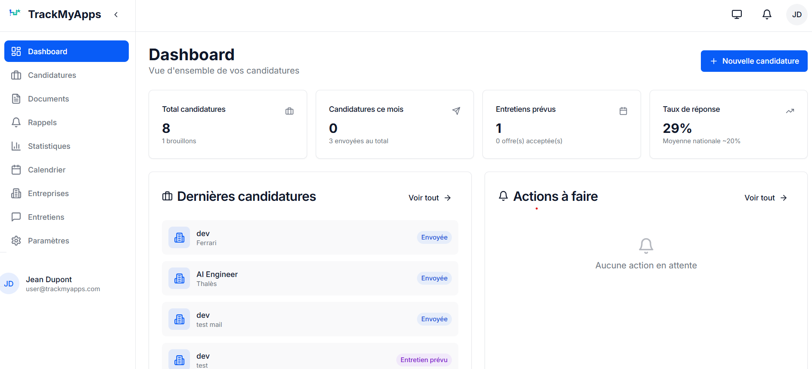
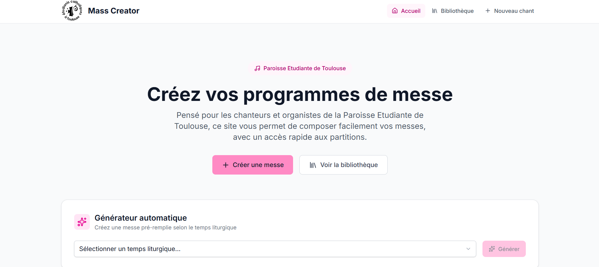

Alexis
de Lécluse
Engineering student at ENSEEIHT, bridging the gap between computer vision research and edge deployment.

Engineering
Projects and skills from my Digital Sciences curriculum.
Skills
Languages
-
 Python
Python
-
 C++ / Arduino
C++ / Arduino
-
 Java
Java
-
 SQL
SQL
-
AdaAda
Data Processing
-
 Matlab
Matlab
-
 NumPy
NumPy
-
 Pandas
Pandas
-
 Scikit-learn
Scikit-learn
-
PyTorch
Tools & Systems
-
 Windows
Windows
-
 Linux
Linux
-
 Git
Git
-
Claude Code
-
GitHub Copilot
Soft Skills
- Teamwork
- Project Management
- Creativity
- Problem Solving
- Adaptability
Projects

TrackMyApps
TrackMyApps is a SaaS application designed to help students centralize and track internship, apprenticeship, and job applications. It brings offers, companies, documents, reminders, and follow-up exchanges into a single workspace to make the application process clearer and more efficient. The backend is built with Node.js, Express, TypeScript, Prisma, and PostgreSQL, while the frontend uses React, TypeScript, Vite, Tailwind CSS, and Shadcn/ui.

Mass Creator
Commissioned by the Toulouse Student Parish, Mass Creator is a modern web app built to help parishes and liturgy teams prepare celebrations. It centralizes a song library, lets users compose masses in a few clicks for each liturgical moment, and enables easy sharing through a public link. With advanced search, sheet music import, and AI-assisted analysis, Mass Creator simplifies music planning and saves valuable time for choir leaders and worship teams.

Financial Prediction Model
Development of a machine learning model to predict the evolution of stock market indices. The project involved data collection, feature engineering, and training several models (Random Forest, XGBoost) to compare their performance in forecasting market trends.

Network Router Simulation
Complete software modelling of a network router in Ada: queuing, routing, traffic management, and cache handling. The project was structured using modular design principles, with chained data structures and trees to simulate realistic packet routing behaviour.

Solar Tracker (Arduino)
A solar tracker project carried out at the end of preparatory classes: the objective is to orient a solar panel towards the most powerful light source around the tracker, with two degrees of freedom. The orientation is controlled by an Arduino board, commanding two servo motors, based on data from four photoresistors placed with the solar panel.

Google Calendar Clone
Creation of a web app based on the principle of Google Calendar: ability to manage a schedule with features like adding or deleting events, choosing slot colors, event types... All synchronized online, allowing multiple devices to access the same calendar. This allowed me to familiarize myself with Google's Firebase tool for managing a database in the cloud.
Career
Professional documents, goals, and inspirations.
Past Experience
Embedded AI Engineer Internship
Delair, Labège, Occitanie
Benchmarking of YOLO-type vision models on various NPUs (Pi AI camera and iMX95):
- YOLOv8/v11 Model Optimization: fine-tuning and INT8 quantization
- Graph Surgery: modifying YOLOv8n to maximize performance on iMX95 (36 FPS)
- Embedded Linux: Yocto-based custom OS compilation
- Real-time Monitoring: FPS, NPU latency, CPU load, temperature — modular architecture
Worker Internship
Lynred, Grenoble
Internship completed at the end of my two years in Prépa INP at Lynred, European leader in infrared sensors, main supplier to Safran and Thales. I was a cleanroom operator in the packaging department (sensor assembly). I was able to discover how a company operates, as well as the role of engineers and operators in an industrial production context.
Observation Internship
Librairie Agapè, Orléans
- Discovery of business operations
- Receiving orders
- Sales
Role Models
Analysis of 3 inspiring profiles and 3 potential mobility projects.
Mobility
Language skills and international aspirations.
Languages
- English: C1 Level — Ready for mobility.
- German: B1 Level — Solid knowledge.
Mobility Plans
My main goal is to complete a semester or a gap year abroad to deepen my skills in data science and artificial intelligence. I am particularly drawn to the North American ecosystem, which is recognized for its academic excellence and dynamic innovation.
Target Destinations: I am primarily targeting universities in the United States and Canada (especially Quebec) that offer cutting-edge programs in AI, Machine Learning, and Natural Language Processing (NLP).
This experience would be the ideal opportunity not only to acquire high-level technical expertise but also to immerse myself in a different research and development culture and perfect my English in a professional and academic context.
Engagement
Community and civic involvement.
Scouting
My commitment to scouting is an important part of my development. With over 12 years in scout groups, I have developed my autonomy and sense of responsibility.
Currently, I am a leader in a scout troop in Toulouse. This role teaches me to manage a team, organize projects, and mentor young people, thereby developing leadership and teaching skills. It also includes budget management and logistics.
Climate Fresk
From the first year of my engineering program, I had the opportunity to participate in a "Climate Fresk" workshop, in collaboration with other students from ENSEEIHT. This allowed us to become aware of the climate challenges of our time and the issues we will have to face as future engineers.
The Trial of King Kong
Also in my first year of engineering school, I was able to attend and participate in the interactive play "The Trial of King Kong," which deals with gender-based and sexual violence (VSS) and its consequences.
"Futur Proche" Festival
ENSEEIHT and the various universities in Toulouse allowed me to participate in the "Futur Proche" (Near Future) festival, which included numerous conferences, workshops, and presentations... raising awareness about climate issues, particularly from a scientific perspective through various innovations, both existing and in development.
Activities
Passions outside of engineering.
Music
Trumpet
3rd cycle level after 10 years at the Conservatory. I had the opportunity to participate in various orchestras, exploring varied repertoires (classical, jazz...), which taught me rigor and teamwork.
Piano / Organ
Self-taught, I learned piano and then organ alongside my trumpet years. This now allows me to accompany singers or other instrumentalists during events or concerts.
Singing
Chorister (bass and tenor sections). My interest in conducting led me to be the conductor of a choir of 9 high school students, a formative experience in project management and team leadership. I am currently a member of a choir in Toulouse as a tenor.
Contact
Feel free to reach out for an internship, a project, or just a chat.